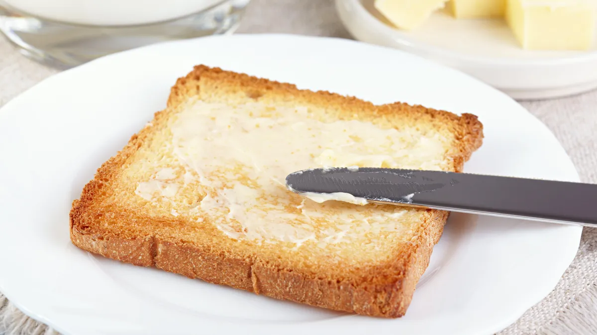

Buttered Toast

Description
Just like mama used to make. Butter on toast.
Ingredients
- Butter
- Toast
- A buttering knife
Steps
- Begin by taking your butter out of the refrigerator 5 minutes before so it softens up a little.
- Toast your bread in the toaster.
- Gently use your butter knife to spread the softened butter on the toast.